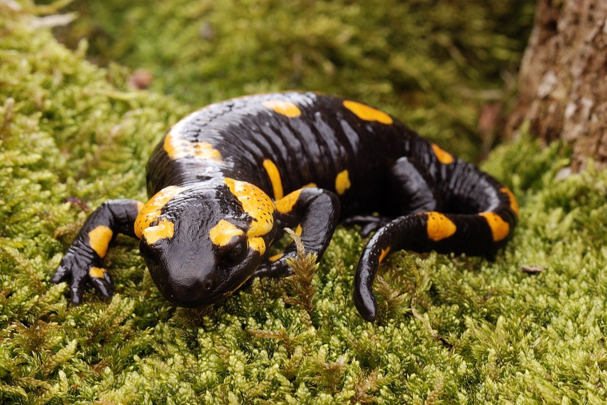

(Salamandra salamandra)
La salamandra común es una especie de anfibio urodelo de la familia Salamandridae. Es el más común de los urodelos en Europa. De hábitos terrestres, únicamente entra en el agua para parir, y muchas subespecies lo hacen en tierra. Es un urodelo inconfundible, de fondo negro y manchas variadas amarillas muy intensas que pueden llegar a cubrir la casi totalidad del cuerpo.
Se distribuye a lo largo de Europa, desde Portugal a Italia y Grecia hasta el norte de Alemania, sur de Polonia y Rumanía.
Es un animal de hábitos nocturnos, aunque puede verse activa de día si la humedad relativa es alta —en días lluviosos o neblinosos—, y cuando la temperatura es fresca pero superior a los 3 °C. Por el día se refugia bajo la hojarasca, troncos de árboles caídos o bajo piedras. Las larvas se encuentran en arroyos y fuentes de aguas limpias y en ocasiones en aguas ferruginosas.
La alimentación de las salamandras se basa principalmente en la ingesta de pequeños crustáceos y variedad de insectos sobre todo cuando las salamandras están en proceso de crecimiento desde qué son crías hasta que llegan a la edad más adulta.